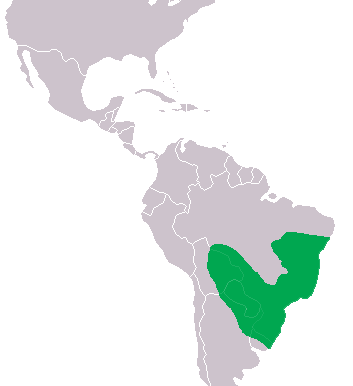

Jacaré do Papo Amarelo

Nome científico: (Caiman latirostris Daudin, 1802)
Nome comum: Jacaré do Papo Amarelo.
Classificação biológica:
Domínio: Eukaryota.
Reino: Animalia.
Filo: Chordata.
Classe: Reptilia.
Ordem: Crocodylia.
Família: Alligatoridae.
Gênero: Caiman.
Espécie: Caiman latirostris.
Nutrição: Carnívoro.
Hábitos alimentares: Alimenta-se de peixes, anfíbios, répteis menores, aves e mamíferos de pequeno porte.
Morfologia do corpo: Possui corpo robusto, focinho largo e coloração esverdeada com tons amarelados no papo, o que lhe dá o nome. Pode atingir entre 2 e 3 metros de comprimento.
Comportamento: Espécie semi-aquática, encontrada em rios, lagoas e pântanos. É mais ativa à noite e pode ser territorialista.
Principais Presas: Peixes, anfíbios, répteis menores, aves e pequenos mamíferos.
Principais Predadores: Humanos (caça ilegal), onças e grandes sucuris.
Locais habitados
Distribuição:Vive nos biomas Pantanal, Mata Atlântica, Cerrado e Amazônia.
Habitat: Vive em áreas alagadas, como rios, pântanos, lagos e manguezais, sendo bastante adaptável a diferentes ambientes aquáticos.
Reprodução: Ovíparo, com fêmeas depositando entre 20 e 50 ovos por ninhada. A incubação dura cerca de 70 dias e os filhotes são protegidos pela mãe.